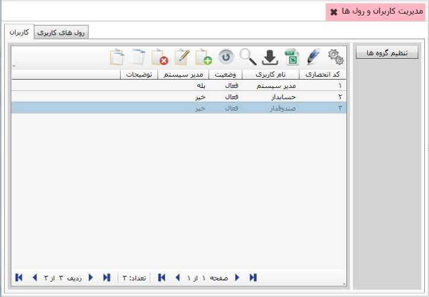
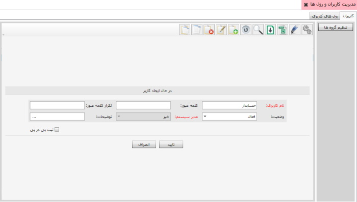
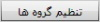
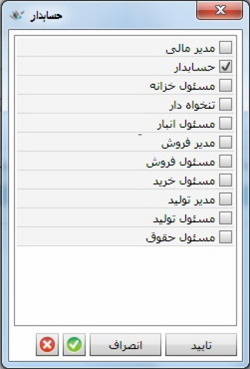

نکته: اگر رول مورد نظر خود را در لیست بالا نیافتید
باید به تب دوم یعنی رول های کاربری برویم
با کلیک بر روی تب رول های
کاربری پنجره ی زیر نمایان می شود:
نکته: اگر رول مورد نظر خود را در لیست بالا نیافتید
باید به تب دوم یعنی رول های کاربری برویم
با کلیک بر روی تب رول های
کاربری پنجره ی زیر نمایان می شود:
در این قسمت می توانید به تعداد کسانی که قرار است با نرم افزار کار کنند کاربر تعریف کنید. اگر بر روی منوی «مدیریت کاربران و رول ها» کلیک کنید صفحه ی زیر نمایان می شود:
صفحه ی بالا را در دو تب مشاهده می کنید، تب اول کاربران و تب دوم رول های کاربری می باشد، تب کاربران به شما امکان تعریف کاربر را می دهد همچنین در این تب می توانید لیست همه ی کاربران را مشاهده کنید، برای تعریف یک کاربر جدید، از نوار ابزار گزینه ی اضافه یا F8 را بزنید پنجره ی زیر نمایان می شود:
اطلاعات جدول در پنجره ی بالا را تکمیل کنید، پس از کلیک بر روی گزینه ی تایید کاربر جدید تعریف خواهد شد بعد از تعریف کاربر جدید می توانید رول کاربری مورد نظر را به او اختصاص دهید، برای تخصیص رول به کاربر ابتدا روی نام کاربر یک بار کلیک کنید، سپس گزینه ی  را بزنید ، پنجره ی زیر نمایان می شود:
همان طور که در تصویر بالا می بینید رول هایی به صورت پیش فرض در سیستم تعریف شده اند برای تخصیص رول به کاربر مورد نظر یکی از رول ها را فعال کرده و بر روی کلید تایید کلیک کنید.
نکته: اگر رول مورد نظر خود را در لیست بالا نیافتید
باید به تب دوم یعنی رول های کاربری برویم
با کلیک بر روی تب رول های
کاربری پنجره ی زیر نمایان می شود:
همان طور که مشاهده می کنید رول های کاربری پیش فرضی در سیستم وجود دارند
برای تعریف رول کاربری جدید گزینه ی اضافه از نوار ابزار را انتخاب کنید
اطلاعات فرم را تکمیل کرده و گزینه ی تایید را بزنید
رول کاربری جدید تعریف خواهد شد
در این تب نیز می توانید رول کاربری را به کاربر مورد نظر اختصاص دهید
برای تخصیص، روی نام رول کاربری مورد نظر کلیک کنید،
سپس گزینه ی
 را بزنید تصویر زیر نمایان می شود:
را بزنید تصویر زیر نمایان می شود:

از فرم بالا کاربر مورد نظر را انتخاب کنید، بر روی گزینه ی تایید کلیک کنید، رول مورد نظر به کاربری که انتخاب کردید اختصاص داده خواهد شد.